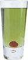

Schnittwerk
SchnittwerkVom HTML zum Bild.
Verfolge ein grünes Elixier durch dein Portfolio. Jede Station führt zu einer Datei, einer Browseransicht oder einer Beobachtung, die du im Prüfungsgespräch zeigen kannst.
Der Klickweg
- index.htmlDie Startseite zeigt Vorlesungskarten. Jede Karte enthält einen Link mit der Kapitelnummer.
- kapitel.html?nr=3Der Parameter nr wählt Vorlesung 3. JavaScript fordert content/vorlesungen/03.md an.
- KopfüBarDer Übungslink verlässt die Kapitelvorlage. Die Bar hat ihre eigene HTML-Seite und Navigation.
- getraenke/elixir.htmlDer Browser liest das HTML und lädt für jedes img-Element die angegebene Bilddatei.
Übungen bündelt die Aufgaben. Learnings sammelt die Rückblicke. Beide verweisen auf Abschnitte in den Kapiteln.
Das Bild im Ordner

Relativer Bildpfad
Beide Wege führen zur gleichen Datei. In der Original-Bar siehst du auch getraenke.gif. Ein GIF und ein JPEG folgen denselben Pfadregeln.

Das Projekt in VS Code
Portfolio/ ├─ index.html Einstieg ├─ kapitel.html Kapitelvorlage ├─ content/vorlesungen/03.md Text für Kapitel 3 ├─ css/ Gestaltung ├─ js/ Verhalten ├─ schnittwerk/ Atlas und Bildrundgang └─ aufgaben/19.10_aufgabe1_bar/ ├─ bar.html ├─ getraenke/elixir.html └─ bilder/gruen.jpg
Öffne in Visual Studio Code den gesamten Portfolio-Ordner. Im Explorer kannst du elixir.html und das Bild nebeneinander öffnen. Suche im Editor nach gruen.jpg und gehe den Pfad im Baum nach.
Starte im integrierten Terminal aus dem Portfolio-Ordner python3 -m http.server 5500 --bind 127.0.0.1. Öffne im Browser http://localhost:5500. VS Code bearbeitet die Dateien, Python liefert sie aus und der Browser rendert sie. VS Code · Benutzeroberfläche
Das Bild auf Vercel
- GitHub · speichernHTML und Bild müssen im veröffentlichten Commit liegen. Ein Bild, das nur auf deinem Desktop liegt, fehlt im Deployment.
- Vercel · bereitstellenBei verbundener Git-Integration baut Vercel die gewählte Version. Prüfe in den Deployment-Details Branch und Commit. Ein Design-Branch kann eine eigene Vorschau erhalten.
- Browser · überprüfenElixierseite öffnen, Entwicklertools → Netzwerk → Bilder wählen und neu laden. Bei gruen.jpg die angeforderte URL, den Status und die Vorschau ansehen.
Wenn das Bild fehlt: Bei 404 den angeforderten Pfad einschließlich Groß-/Kleinschreibung mit GitHub vergleichen. Bei 200 und leerer Vorschau den Inhaltstyp prüfen: Für dieses JPG erwartest du image/jpeg. Liefert die Adresse HTML, kann eine Weiterleitungsregel die Bildanfrage auf die Startseite umschreiben.
Für diese kleinen Übungsbilder genügt die statische Auslieferung zusammen mit dem Portfolio. Vercel · Git-Deployments
Sieben Prüfungsfragen
Antworte erst frei. Öffne dann die Frage für eine mögliche Kurzantwort und ein Beispiel aus deinem Portfolio.
V1 · Client und ServerWarum startest du das Portfolio über localhost?
Mein Browser lädt die HTML-Seite vom lokalen Webserver. Für die Kapitel schickt JavaScript weitere HTTP-Anfragen nach Markdown-Dateien. Beim Doppelklick öffnet der Browser eine file-Adresse. Dort können seine Sicherheitsregeln diese fetch-Anfragen blockieren.
Anfrage und Antwort vorführenV2 · HTMLWas löst ein Link aus, und wann wird ein Bild geladen?
Ein Klick auf den Link mit href öffnet die Elixierseite. Beim Lesen ihres HTML entdeckt der Browser das img-Element. Für dessen src fordert er das Bild separat an. Ein alt-Text beschreibt den Inhalt, etwa für einen Screenreader.
Bei der KopfüBar beginnenV3 · Relative PfadeWarum steht vor bilder/gruen.jpg manchmal ../?
Auf bar.html bin ich im Hauptordner der Übung. Von dort führt bilder/gruen.jpg zum Bild. elixir.html liegt im Unterordner getraenke. Von dort geht es mit ../ auf die übergeordnete Ebene und dann zu bilder/gruen.jpg.
Ausgangsseite öffnenV4 · Formulare und StringsWie wird aus 100,4 eine Zahl für die Berechnung?
Das Eingabefeld liefert einen String. Mein Rechner ersetzt das Komma durch einen Punkt und liest die Zahl mit parseFloat. Bei Dollar nach Euro multipliziert er mit dem festen Übungskurs 0,86. Aus 100,4 werden gerundet 86,34 Euro. Bei 12abc liest parseFloat nur den numerischen Anfang.
Eingabe ausprobierenV5 · ObjekteWas ist der Unterschied zwischen einem JavaScript-Objekt und JSON?
Im Atlas bündelt ein Objekt Dateiname, Kapitelnummer und Beschreibung. JavaScript kann direkt auf dessen Eigenschaften zugreifen. JSON ist ein Textformat für solche Daten. JSON.stringify erzeugt den Text, JSON.parse liest ihn wieder ein.
Medienobjekt untersuchenV6 · DOMWie entstehen sieben Kapitel aus einer HTML-Vorlage?
kapitel.html bleibt die gemeinsame Vorlage. Das Skript liest nr aus der URL, lädt die passende Markdown-Datei und wandelt ihren Inhalt mit marked in HTML um. Sobald dieser Inhalt im DOM steht, sehe ich das gewählte Kapitel. Der Teil hinter # springt zu einem Abschnitt.
Kapitel 3 zeigenV7 · EreignisseWie startet ein Klick die Animation auf „Über das Portfolio“?
Ein click-Listener liest den gewählten Weg am Button aus. Das Skript setzt data-weg und dann schrittweise data-schritt. Das CSS reagiert auf diese Zustände. Die eingeblendete Serverzeile ist simuliert. Echte HTTP-Anfragen sehe ich im Netzwerk-Tab des Browsers.
Animation erneut starten